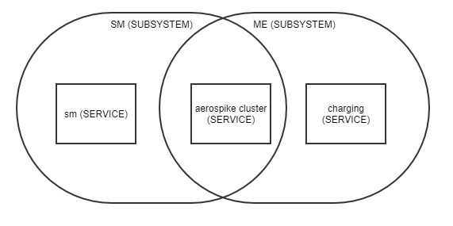

NCC subsystems group one or more services that all work together to provide complete business
functionality to outsiders. This concept is proprietary to NCC. NCC subsystems include:
- SM, which handles GUI and external API requests
- ME, which handles 4G/5G traffic and performs application business logic
- SS7, which provides SS7 connectivity and related special processing
Each subsystem has a state of
out of service or
in service.
This figure shows a basic NCC subsystem.
Figure: NCC subsystem
